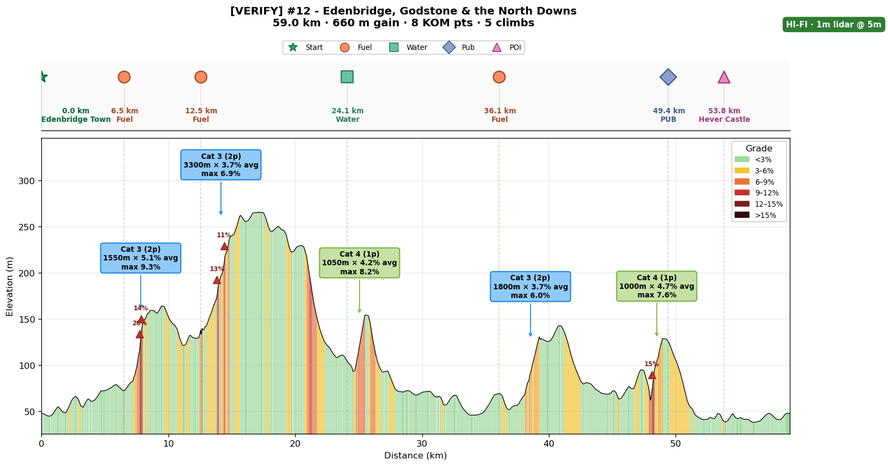
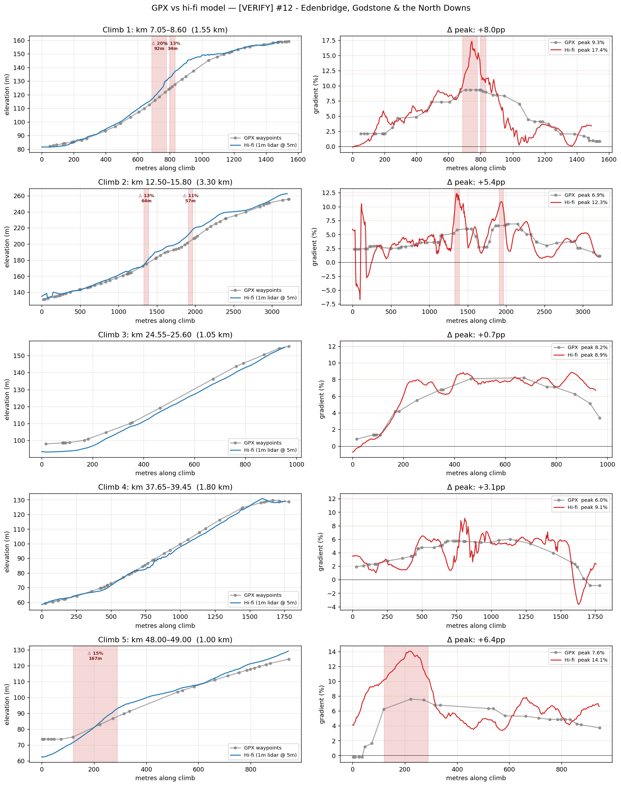
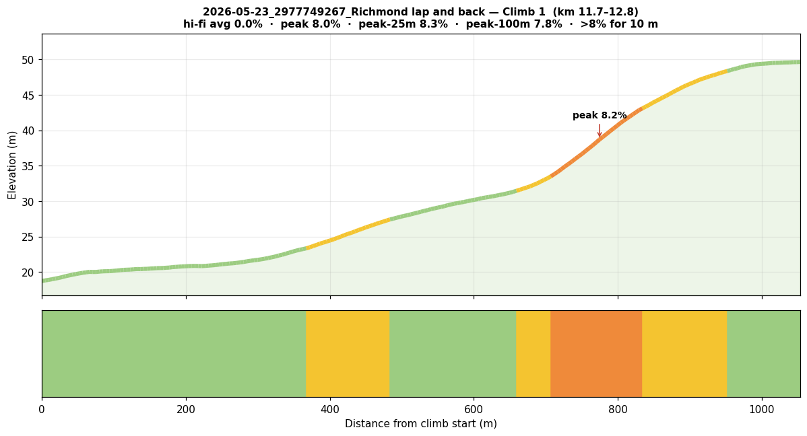

A Claude agent you host yourself — it reads your rides, predicts your routes, tracks your form, and verifies every climb against 1-metre LIDAR so the pacing is actually right. A physicist's model with a directeur sportif's attitude.
“Shut up, legs.” — your new coach, probably.

I wanted a coach that knew two things most apps don't: the physics of my engine (the legs — not the Brompton's motor) on each of my bikes, and the real gradient of the roads I ride.
TrainingPeaks knows my numbers; Strava knows the segments; neither knows the routing engine flattened the 14% wall on Leith Hill into a polite 9%. So I built one. And because it's a Claude agent, not a static plan, I just talk to it — “knee's grumbly, what should I do this week?”, “I'm in France for 10 days, re-plan around these climbs.” Training plans assume your life goes to plan. This one bends when it doesn't.
Ask for the week's workouts, a route's pacing, or a return-from-injury plan — answered from your real data, not generic advice.
Injury, travel, a wrecked work week — it reshapes the block around what actually happened instead of guilt-tripping you.
Parses FIT: TSS/NP/IF, power curve, climbs, and a per-ride analysis written to disk.
Speed & duration at FTP/MAP/Z2/Z3 with honest uncertainty, a pacing narrative, and a fuelling plan.
Re-checks every climb against 1 m elevation data so a flattened gradient doesn't wreck your pacing.
CTL / ATL / TSB form forecasting on the TrainingPeaks lag-1 convention.
UCI Cat 4 → HC with a Tour-de-France-scale KOM-points total per ride.
The correct number of bikes is N+1 — and it knows the physics of all of them. Per-bike CdA/CRR/weight plus Silca-extrapolated pressures for your real front/rear split.
Routing engines and GPS smear elevation. On a Cat-3+ climb that's the difference between “ride at threshold” and “blow up 200 m from the top.”
For every climb it finds, the agent re-samples the road against 1 m LIDAR DEM tiles (UK DEFRA, FR IGN), map-matched to the tarmac with OSRM, GPXZ fallback outside cached tiles — then blends the hi-fi climbs back into the route profile.

The repo ships a CLAUDE.md “brain” that any Claude Code-compatible
assistant auto-loads — the coaching workflows, the physics, the training-load definitions, the
conventions every script follows. It reads your profile, runs the scripts, and writes analyses
back to disk, updating your profile as a side effect of every conversation. Portable: it runs
standalone, or hosted in an OpenClaw workspace. You don't need the agent — every script
runs from the CLI — but it's what turns a box of tools into an everyday coach.
💬 “Shut up, legs.” — when the data says you've got more in you.
💬 “It's not the bike. It's never the bike.” — but I'll still nail your tyre pressure.
💬 “The correct number of bikes is N+1.” — and I know the physics of all N.
💬 “Don't blame the map.” — I checked the gradient against 1 m LIDAR. Blame the legs.
| Climb | Length | Avg | Max | Cat | At FTP |
|---|---|---|---|---|---|
| Box Hill | 2.5 km | 5.0% | 8% | Cat 3 | 16.5 km/h |
| Leith Hill | 1.6 km | 6.5% | 11% | Cat 3 | 13.8 km/h |
| White Down | 0.9 km | 8.5% | 14% | Cat 3 | 11.2 km/h |
For the 11% pitch on Leith Hill: ~280 W at 60 rpm to clear in the lowest gear (34×32 ≈ 10.5 km/h). Fuelling: 54 g carb/hr, one stop at km 35. Pacing: first 20 km below 130 W, then target FTP on the climbs.
